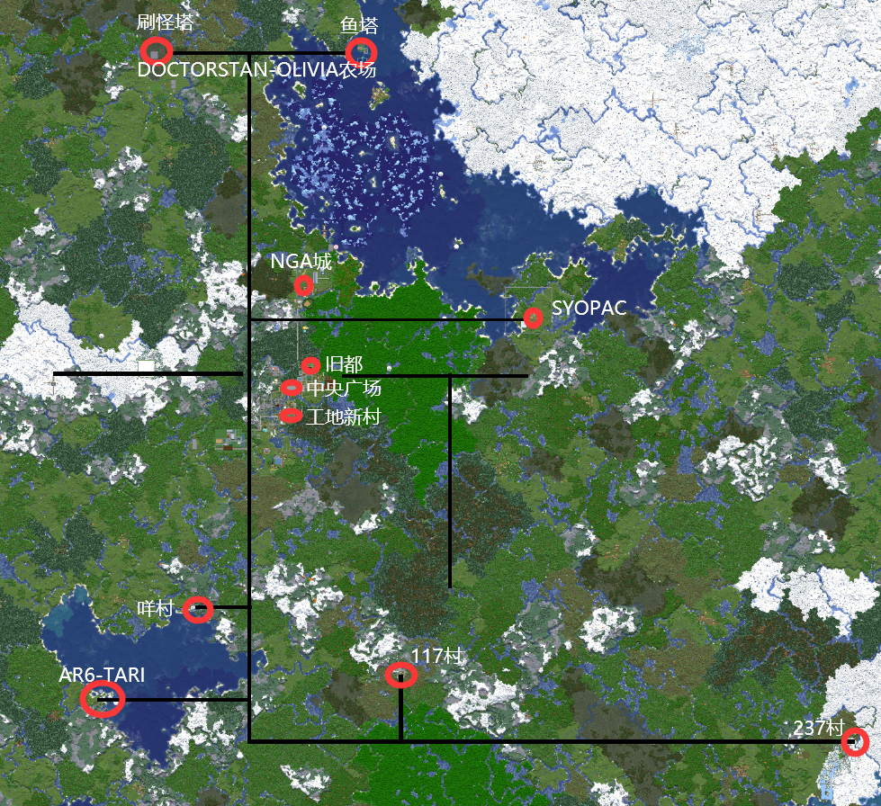
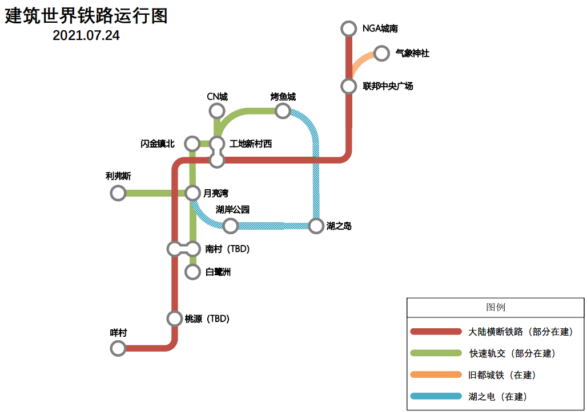
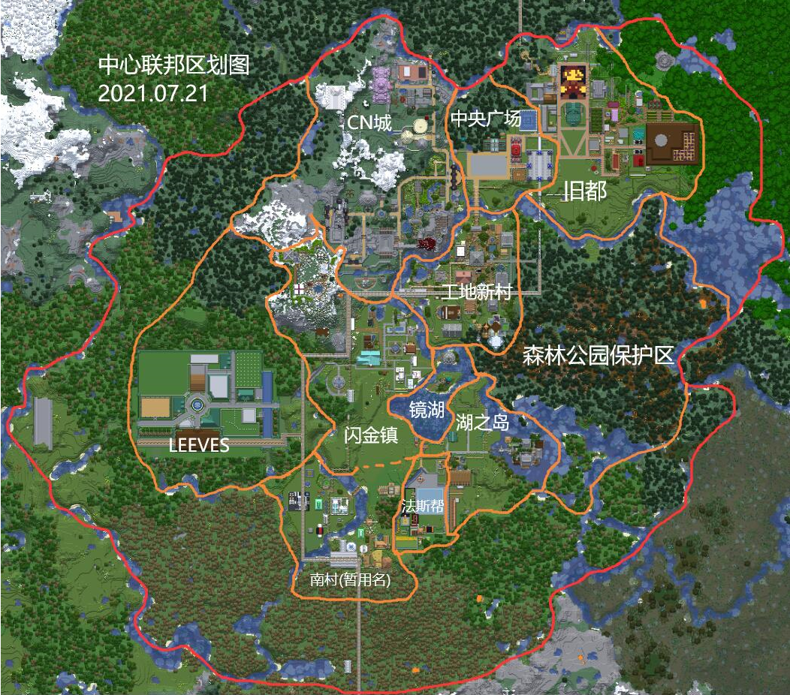

历史与现状
兰姆服（简称 FrogMCS，又名鸽子服、赛艇服）从私人朋友服务器发展而来，最早的开服历史 能追溯到 2013 年春，而 2016 年强制正版认证之后更是走上了正轨，前前后后更迭了 4 个周 目、迎来和告别了很多新老朋友、举办了无数次集体活动、服务器载体从 PC 到阿里云，走过 了相当长的时光，至今仍在传承。 现阶段服务器为第四周目，人员构成多数为码农、打工人、大学生，服务器程序采用 Paper， 管理团队有@Himayama @237th @7Bradley @SnowRhex，物理机设在上海，由@Euyuil 的 2TIGers 美术设计工作室赞助，附上链接：https://space.bilibili.com/2837536。
文化和理念
我们的理念是 Minecraft is a kind of lifestyle，现在很可能已经停止活动的【Meowcraft】是我 们的精神先驱，所以我们也坚持原版生存不添加内容类 MOD，服务器承诺对原版客户端持续 保持兼容。我们希望这里能成为大家的第二家园，可能我们服务器的世界里没有最漂亮的建 筑、最精妙的红石机械，但我们希望大家能建立友谊，在方块世界里留下不可磨灭的回忆，成 为生活的助力和补充，按照自己的节奏悠闲愉快地游戏。服务器不定期会举办节日庆典。
烟火大会
服务器曾举办过三届烟火大会，通常分布在仲夏、春节、国庆或圣诞等节日举办进行。
新年参拜活动
服务器 2017 年春节曾在第三周目的月火神社举办过新年登山参拜活动，与会人员在留言板上 写下了对将来的期许，至今仍保留在数据中，我们会找一个契机在当前建筑世界内重建加入第 三周目的主岛。
新手训练生计划项目
服务器举办过四届训练生计划。第一届训练营在火村教育基地进行，优秀毕业生建筑师 @RU1NER，探险家@7Bradley @QQuincy 现在已经成长为服务器中坚力量。第二届为袖珍封闭 世界，其中法斯帮帮主@Van 如今亦相当可靠，有许多探险成果。第三届复刻火村的形式，名 为水村，毕业生多在 NGA 城扎根。我们期待将来训练生计划的延续再启动。
策略和规则
服务器在第四个周目（现行周目）采用更新而不更迭周目模式。我们的策略是分为两套世界， 即建筑世界和资源世界，每套世界均有主世界-下界-末地配套。 其中建筑世界永久不更换，设立世界边界（目前是X, Z in [-4000, +4000]），视今后出现巨大的世界生成内容更新而扩大边界区域； 资源世界则以大版本为周期、资源末地以月为周期定期更换。
服务器管理条例 总则
一、请玩家们和睦友善相处，不允许对其他玩家发出歧视和人身攻击的言论。
二、严禁未经允许拿取他人财物、修改和破坏他人建筑的行为，严禁恶意卡服行为， 服务器有CoreProtect插件追溯记录玩家的任何游戏行为。
三、服务器不允许出现未有提前明显放置或声明警告标识的TNT、针对玩家的杀人陷阱或设施， 其中设计意图里会破坏地形和建筑的种类不允许在建筑世界出现。
四、关于有高频电路或大规模刷怪、生物养殖场的设施（本条内统称设施）， 任何世界出生点33区块半径内不允许放置这些设施。频繁活跃区块（包括出生点和主要聚居区）的电路和生物必须经过审查， 任何玩家也有配合管理员审查和整改的义务。其他普通区块的大型设施必须设有人为开关， 且使用此类设施以不影响其他玩家的情况为原则，分时段使用， 此类设施只允许在中国法定工作日的2:00-17:00（UTC+8）使用，超时使用会被勒令停止，超时挂机会被遣返。
五、玩家可以向管理员投诉其他玩家的违规行为，有违反服务器规则嫌疑的玩家行为会由管理组查证、 询问之后内部讨论得出结论之后视情节和影响轻重给予一定程度的处罚并公告，处罚种类包括赔礼道歉、 劳动改造、一定时长的游玩禁令、没收个人财产、删档、除名等。 其中被永禁驱逐的玩家在驱逐通告生效时所有服务器内个人建筑、物品立即转为管理员托管，发电点数立即作废。
公会组织规则
一、玩家可以自由结社，在服务器内形成各类社团组织，从事个人或合作集团化的土建、经商等事业。此类组织将会统称为公会，并适用于此条例。
二、公会的产生的必要条件是申请人设计好公会名称、公会旗帜（均不能和已有公会重复）， 并选择好公会本部总办（建筑，不可是居民住宅）或公会驻地（公会取得该地区的管理权或授权）后向管理员登记申请。 满足条件的公会经批准后正式挂牌成立，正式公会的旗帜会入驻中央广场旁的公会中心进行展示。
三、原则上一名玩家不能拥有多重公会成员身份。
四、合法公会将会被视作独立法人，可以和自然人一样在各地进行建筑许可申请、 开辟新地区申请、贸易等活动，其旗下建筑、财物和产权与公会成员的个人财产间没有天然的关系， 涉及公会的纠纷、兼并和解散以及其相关的产权归属问题需要通过管理员联席会议进行仲裁批准。
五、合法公会若成功申请新地区得到批准，则自动获得新地区的管理权。
六、公会如若更改本部总办或驻地所在地区，则需要公会主席向管理员报备以修改游戏内外各种形式的文档。 如若更改公会名称或易帜，则需要向管理员提出申请，批准后执行，考虑到影响，原则上非必要情况不提倡更名易帜。
建筑世界规则
一、玩家不允许以采集资源或开荒为主要目的大规模破坏建筑世界的地形和资源， 该种行为包括而不限于：伐木挖沙、地底开矿道、下界采集等。 允许探索各类地牢、矿井、遗迹和挖宝，但不能破坏遗迹的建筑本体。
二、建筑世界会划分成区域为单位进行管理，现阶段区域管理由负责人治理制度向公会治理制度过渡， 区域管理责任方现阶段归属于负责人或拥有管理权的公会，下文简称管理方。
三、新建区域的申请由合法公会向管理员@Himayama提交，获批后由申请的公会管理，暂时没有产生管理方的区域由管理员有限责任代管。 需求在旷野进行建筑的个人玩家可以向管理员请求建立管理员托管的区域并分配建筑用地，大规模开发建议以公会名义进行。
四、区域管理责任方拥有具体区域的用地审批、整体规划设计以及建筑风格指导的权力，同时承担该区域公共性质设施的建设统筹责任。 区域内任何性质的建筑用地均须由个人或公会向相关管理方申请，管理方可以对区域内的建筑提出修改、 移动或迁出区域的意见，但不允许毁坏其建筑，极端情况下可以报管理员申请强制处理。
五、大量占用CPU Tick处理时间的生产性机器本体会被认定为公共机器， 建筑公共机器的个人或公会可以合理售卖其产物或服务，但机器须服从管理。
六、除个人住宅以外，未有明确警示的一般整蛊陷阱如造成人员财物损失的， 由区域管理方协调仲裁责任人对受害人的赔偿，协调无果时可提出由服务器管理员最终裁判。
七、可以出于建筑的目的对地形进行小幅度修正，但推荐根据已有地形设计建筑，不建议大范围强制转换地形，该条款具体情况具体分析。
资源世界规则
一、资源世界原则上可以随意采集甚至破坏性开采资源，因为会重置所以不建议进行高价值建筑， 原则上资源主世界以大版本更新为周期重置，资源末地以自然月为单位不定期重置。
二、鞘翅冒险型玩家跑图探宝搜刮只允许在资源主世界出生点营地以东（X+）的区域进行。
三、新登录的玩家则推荐在资源主世界出生点营地以西（X-）的区域进行开荒和探宝冒险。
四、大规模（边长50格以上）的挖区块行为只允许在X坐标大于1024的区域进行。
五、欢迎各位玩家或公会在资源主世界的营地建设必要的公共设施和投放应急资源， 但不建议开局给萌新发放钻装鞘翅以及更稀有的物品，如若有被管理员判断为不适当的物资馈赠，会被勒令整改。
当前周目聚居群落介绍
建筑世界主要聚居群落分布图（附下界快速路）

从中央广场出发，北部的快速路为 @DoctorStan @Oliviamc 二人修建，南部的快速路为早先管理员修建， 东西部的快速路原为 33 修建，断开情况为历史遗留问题，有条件的时候予以修改后接回。
建筑世界铁路运行规划

实心的部分为已开通线路，虚线部分为规划线路。
跨地域的主干线建设标准为双向两车道，以后新修线站逐步实现普及缓冲区间和自动化。
支线建设标准因地制宜，以效率和美观优先。
注意：中央广场站 和 南村站 的横断铁路线站台均配有缓冲区间，有缓冲区间的车站下车后请不要把车拿走，直接让空车发射自动回收，不然会影响系统对占车位的误判。而无缓冲区间的车站下车后务必要拿走车，以防后来人冲突回弹。
中心联邦（暂行名称）图

以下为各区域简介。
旧都+中央广场
这个世界最初起点的平原，位处中心联邦的东北部，主要建筑以公共建筑为主， 有怀士堂（在建）、马力欧广场、商店街组合、天气神社（在建）、温泉旅馆、二代公共钓鱼池、工会中心、博物馆、@LB宅、火车站，以及旧33经济开发区的遗址。 后由于旧33区持续发生极大极恶服务器爆卡事件，联邦开发重心转向工地新村为首的环湖区域，旧都逐渐遭到废弃。 日前旧都经过无害化处理已经基本恢复正常，以联邦中央广场为首的新中心基建火热进行中，各项市政工程逐步推进（联邦广场、北门码头、电车线路等）。
区域负责人：@Himayama。
CN城
CN城在联邦的西北部，被高山环绕，地势险要，以中世纪石城风格为主体风格，由@Noland_CN一手设计实现，是联邦的守备重镇， 内有标志性的城堡、兵营、魔法学院、骑兵像等建筑，并设立了到工地新村的快速电车线路。
区域负责人：@Noland_CN
工地新村
工地新村是联邦乃至服务器最繁华、完成度最高的居住区，位处联邦的中心区位，整体建筑风格为木结构为主的田园风， 拥有烤鱼城地标、仰望星空钓鱼台、大教堂、露天温泉、轨道交通工地新村西枢纽站等公共设施以及 @RU1NER @237th @Wanfang @7Bradley @kkamisama @MagicSquare宅基地。 目前正在进行五星级工地村大酒店的建设。
区域负责人：@RU1NER
镜湖
镜湖原是工地新村南部的河域，最早由@Aroi圈地造宅，在服务器730重大时光倒流事件发生后，世界线改变了， 河域被人工开挖改变成目前的形状，即镜湖。湖区北部原@Aroi宅的位置上由@RU1NER建设了高达133m的强强石塔，成为联邦的新地标， 而北部小岛出现了来自外域的门，连通上了异次元（资源世界），环绕湖区的工地新村、闪金镇、南村、法斯帮、湖之岛区域则亦统称为环湖居住开发区。
区域负责人：@RU1NER @Himayama
闪金镇
闪金镇在镜湖西北部，是连通CN南城、工地新村和LEEVES的路口。730时光倒流后由@Aroi首先登录开发住宅和钓鱼小屋， 而后逐渐入驻了@QQuincy的狮王之傲旅店、@7Bradley的汤姆头和视窗屋、@Flora的雪山庄园、@rryy的狗头房和兔屋、@ru1ner的密室逃脱、@ProSRLee宅， 原商店街也升级为移动巴士和7-11便利店，之后建立了闪金镇地标广场、图书馆、月亮湾花海景区，承办过2021花火大会。
区域负责人：@QQuincy
湖之岛町
湖之岛在镜湖东南岸，最早规划为大型马场用地，设计几经更改，最终马场区域改为町的南部，东部则是被自然针叶森林环绕@Himayama的竹苑， 北边是半岛本体，湖边先行建造了糖果茶楼。拟定开发为和式商店街旅游观光区。
区域负责人：@Himayama
法斯帮
法斯帮驻地位于马场路隧道西侧的盆地，和跑马场一路相隔，目前有三位成员@Van @Inf404 @mmxii2012的住宅， 代表性建筑有水立方和VAN像，该区域有发达的自动羊毛产业，目前已又又又鸽了好久。
区域负责人：@Van
南村(TBD)
联邦新设立的区域，毗邻法斯帮和闪金镇，拥有南村交通枢纽以及@Gabriel_Chen和@ManusErohand的驻地和隔河相望的@kmk4dwty混合风格田园农庄， 正在招商、招人、蓬勃发展中，并寻求更名。
区域负责人：@Himayama托管
近郊都市LEEVES
该市在闪金镇西部的森林里开辟而来，原型出自于Falcom《英雄伝説 閃の軌跡III》的同名游戏场景，最初设立背景为替代由于旧33区而爆卡的旧都发挥出生点职能。 在建设完成度过半的时候由于众多新玩家加入服务器、环镜湖开发区开始走向繁荣的新形势下，旧都的出生点职能被取代， 失去了继续投入的意义从而搁置了建设。日后在更高优先度的工程完成之后或有其他合适契机再考虑重启项目。 目前引进了@Syopac负责的服务器分类公共仓库项目，并重新规划了铁路线，逐渐复苏中。
区域负责人。@Himayama
NGA城
2020年11月，服务器从NGA招募了一批富有活力的新选手加入社区，新选手们联合建造了NGA城， 目前城内有自由贸易区、运河、圣诞鹿广场、刷怪大树、地宫、工业绵羊、红石音乐Maqq公寓以及夸的锚像等， 同时也有@SnowRhex @AsielQ @KOTOKO @Gokou @TkingCat @Misaka @LINWUFENG @visper77 @Maqq @Maotoo @enjing 的民宅， 已联通大陆横断铁道和下界交通。
区域负责人：@SnowRhex
工业园区
工业园区位于NGA城西北部，设立宗旨是优化服务器公共资源的生产、储存和分配。目前咕咕中，并且持续咕咕中（）
咩村
围绕咩酱在地中海北岸豪宅兴起的新聚落，居民有咩酱、猫猫头、玛、长安和罪等，目前蓬勃发展（咕咕）中。
区域负责人@kikikiranya
深海之泪（AR6-TARI-LDFOCEAN基地）
位于地中海南岸，有叹为观止的雕塑。
区域负责人：@Airyou06
117村
在服务器开荒伊始加入以@117为首的神秘四人组开发的孤村，现今由于四人组已化为鸽仙，而变为鬼村。
区域负责人：@117
237村
在服务器开荒伊始@237th没有选择加入旧都，而是进行1小时直播开荒挑战，选择了村民路线发展。 机缘巧合之下流浪到237村住下帮助当地村民发展族群、振兴经济，村旁步行数十米即有末地传送门，是最初往末地旅行的必经之地。 @Himayama在此处设立了小型火车站和铁道之夜旅馆，村内也秘密收养了熊猫家族和北极熊，而后@237th搬家加入了工地新村，留下了不知所措的当地居民和只有一层的腾讯大厦。
区域负责人：@237th
DOCTORSTAN-OLIVIAMC农场
联邦北部2km左右位置的大平原处，@DoctorStan和@oliviamc建立了他们的农场、刷怪塔，不远处的海底神殿也被改造为了海底渔场，盛产各类海晶材料和生鱼。是经济型玩家的常去之处。
区域负责人：@DoctorStan @oliviamc
SYOPAC农场
联邦东部远处海的另一边，有@Syopac开发区和@OldDove1993的铁炉堡建设地，由于这两人长期鸽，这两个地方完成度提升缓慢，人迹罕至。标志性建筑是Syopac的高墙。
区域负责人：@Syopac
其他地区
桃园岛、@RU1NER人工湖、@Flora野外庄园 @YibaccZ城 以及某个新的大型聚居市镇都在设计开发中。
管理团队介绍
服务器管理团队目前有@Himayama @237th @7Bradley @SnowRhex 四人，目前存在一定的分工，但也并不明确，管理团队内的成员均有权执行服务器章程、解决各类突发事件。
@Himayama主要负责服务器系统运维、世界规划、发电管理，游戏内OP。
@237th 主要负责NPC村民商店的条目管理、投放和更新，游戏内OP。
@7Bradley 参与QQ群管理，参与团队决策讨论。
@SnowRhex 负责资料整理，参与QQ群管理，参与团队决策讨论。
我该如何从零开始？
前置工作
玩家须拥有Mojang Minecraft Java Edition国际正版账户（网址：minecraft.net）， 如需在基岩/手机版上通服游玩，则同时需要一个Microsoft邮箱账户（此账户不需要有游戏）。
游戏客户端的安装
使用PC游玩时，有条件的玩家可自行安装当下同等服务器版本的官方原版客户端版本进行游玩，同时也可以直接使用群内发布的懒人包（自带便利插件和材质包光影包）。
使用基岩版/手机端进行游玩的时候，需要在对应平台获得当下最新版的基岩游戏客户端（支持Android和iOS）， 此客户端一般由相应平台的应用商店发布，我们不提供。注：iOS客户端需通过非国区AppStore购买，Android正版客户端亦需通过GooglePlay商店购买。
登陆游戏
在客户端里填入服务器地址以联机，地址见群公告。
首次登陆的陌生玩家会被服务器自动隔离在安全控制区之内，此时需要呼叫管理员经审核后放行进入游戏世界。根据玩家自我评估水平的差异，我们有如下建议：
A类：全新新手
你需要做的是在资源世界拿上一张起始床，走出数百米之后原汁原味完整体验游戏内容，在开荒中学习，群里有一份指导性流程表格，同时也推荐查询Minecraft Wiki获取知识。有时候我们会不定期给成批的新手开展训练营活动，如赶上集体训练营期间则建议参加。
B类：了解游戏常识和常用机制
可在资源世界自行开荒，也可以申请加入训练营活动。
C类：在B类基础上有建筑/红石专精的技能或目标
在开荒后进行专精方面的研究，如果有互补型玩家结队活动，也有跳过开荒阶段之可能。
FAQ
Q：服务器太好玩了，我能不能邀请朋友加入？
H：只要是满足基本条件、认同服务器理念、遵守服务器规章制度的新朋友，我们都非常欢迎。被推荐人申请前必须仔细阅读本手册。
Q：新人来服务器想安家要怎么样做？
H：先在资源世界开荒并且游览一圈建筑世界，然后考虑一下自宅的规模、风格和设计。对于想加入现成聚落的直接联系管理方审批规划， 也可以思考一下是否参与公会玩法，想新建聚落或者独狼的联系管理员@Himamiya
Q：MOJANG官方网站因为不可控力难以访问，如何设置账户或购买游戏？
H：有条件的群友可代劳。
Q：懒人包跑不了，报错。
H：由于Minecraft 1.17版本官方最低要求JRE16环境，建议小白不要使用需求JRE8的HMCL，Win10平台下可直接使用PCL2。 其他问题Win10可远程协助，其他小众系统自行解决，没有技术力的玩家推荐在macos/linux下运行官方启动器。
Q：周目是什么？什么时候开新周目？
S：不会有新周目。周目是之前服务器应对大版本更新、新生态加入的无奈之举。服务器的双世界+版本更新扩大边界解决了这个问题。如果感兴趣，服务器之前有过3个周目。
Q：什么时候升级如1.17？
H：服务器已在2021年7月全面升级1.17.1，我们对于跟随新版本升级持积极态度，会继续跟随大版本，在周边软件成熟的情况下稳健进行版本更迭。
Q：手册就这？
H：别的东西以后想到再加。